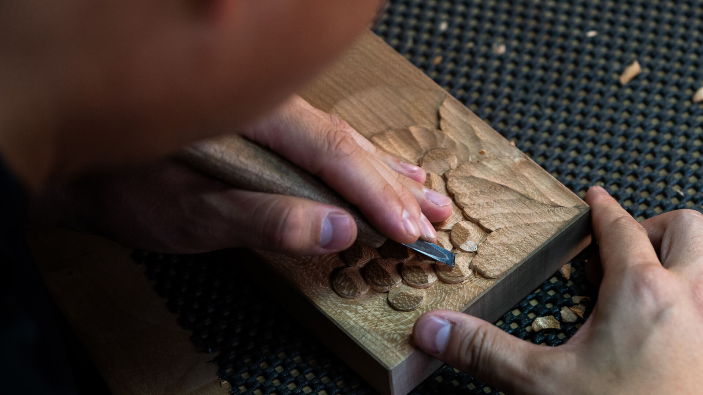
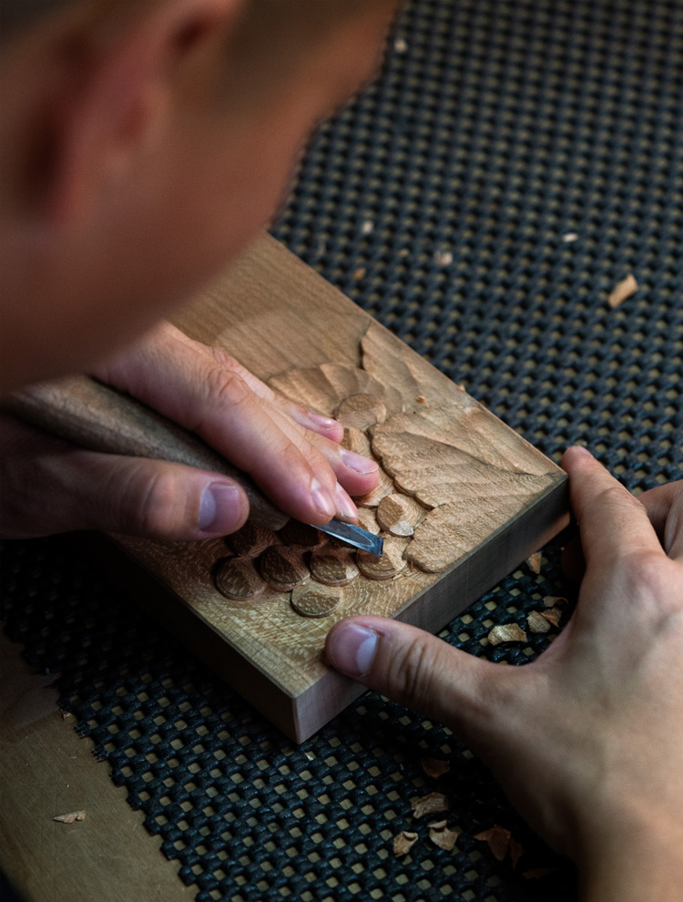
たくみ
HERITAGE AND
THE SPIRIT OF CRAFTSMANSHIP
CRAFTSMANSHIP軽井沢彫「一彫堂」
軽井沢長倉エリアの魅力、
自然と歴史に囲まれた「一彫堂」
-
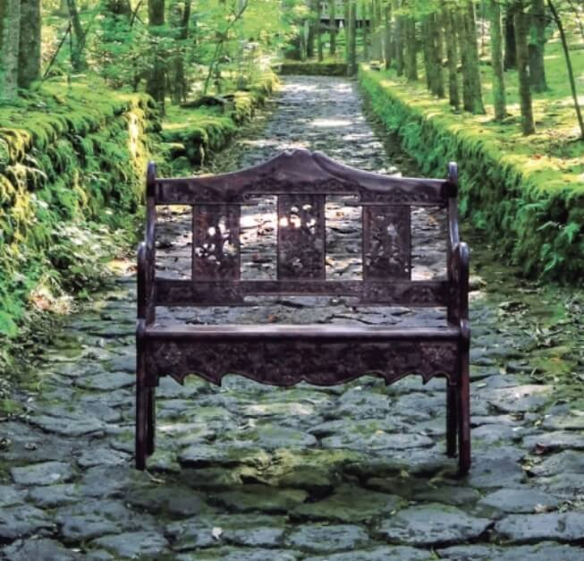
-
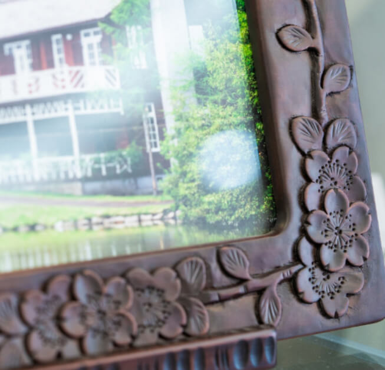
-
旧軽井沢と長倉エリアは、その豊かな自然環境と静かな雰囲気が特徴で、多くの訪問者に癒しと安らぎを提供しています。特に長倉エリアは、四季折々の美しい風景に囲まれ、自然の魅力を存分に感じられる場所です。この地域は避暑地としての長い歴史を持ち、多くの文化人や芸術家が創作活動を行ってきた場所でもあります。その歴史と環境が、一彫堂のものづくりに大きな影響を与えています。一彫堂の家具は、旧軽井沢や長倉エリアの伝統的な建物や風景と調和し、この地の魅力を反映しています。訪れる人々が軽井沢で特別な時間を過ごす際、その空間を一層引き立てる役割を果たすことを願っています。
-
また、地元の住民にとっても、旧軽井沢と長倉エリアは自然の美しさと住みやすさが魅力です。朝の涼しさや清潔な街並み、鳥の鳴き声が聞こえる静寂など、軽井沢に戻るたびに感じる安らぎが、この地に住むことの喜びを再確認させてくれます。
軽井沢の伝統工芸である軽井沢彫を、さらに多くの人々に知ってもらいたいという思いから、一彫堂はこの自然豊かな地で、未来に向けた活動を続けています。新たなホテルや商業施設が増える中でも、軽井沢の魅力は変わらず、旧軽井沢と長倉エリアは人々に愛され続けています。
NEWS & TOPICS
New Release in Karuizawa Area
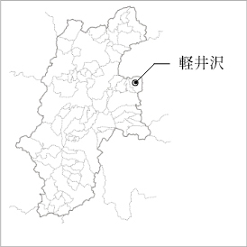
- （仮称）軽井沢長倉プロジェクト
エスコンは下記の通り、長野県北佐久郡軽井沢町において、新規事業用地の取得を行いましたのでお知らせいたします。
当該新規事業用地は、しなの鉄道・北陸新幹線「軽井沢」駅まで車で約10分、最寄りの「碓氷軽井沢 IC」からもアクセスしやすい塩沢エリアに位置します。
会員様には、最新情報や
特別な商談機会をいち早くお届けします。
軽井沢彫の伝統を受け継ぐ
「一彫堂」の歴史と伝統

一彫堂では、創業以来、職人の手による精緻な彫刻が施された家具を作り続けています。そのものづくりの根幹にあるのは、素材選びから仕上げまで、すべてに対するこだわりです。特に木材の選定には細心の注意が払われ、家具が長年にわたって美しさを保つように心掛けられています。一彫堂の家具は、世代を超えて愛用されることが多く、50年、60年と使われた家具が修理のために戻ってくることも少なくありません。こうした長寿命の家具を作るため、職人たちは常に技術を磨き、木材の痩せや破損といった問題に対応するための工夫を重ねています。例えば、年月が経っても強度を保つ仕組みやデザインが取り入れられています。
また、時代の変化に合わせたデザインの進化も一彫堂の特徴です。伝統的な彫刻やデザインを守りながらも、現代のライフスタイルに合うようにコンパクトでありながら存在感のある家具を提案しています。最近では、ブラックを基調としたモダンなシリーズや、革を取り入れた新しいスタイルの家具も手がけています。
一彫堂は、伝統を大切にしつつも、時代に即した新しいものづくりを追求し続けています。その結果、洋室にも和室にも調和する家具が生み出され、多くの人々に愛され続けています。
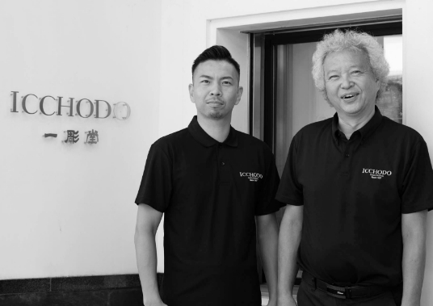
-
一彫堂
五代目
堀川 真太郎（ほりかわ しんたろう）
後継者であり、自身も彫刻師として技術を磨き、広報も担当、各地への出展や若手の育成ほか
伝統を受け継ぎ新たな試みに挑む一彫堂 五代目 -
一彫堂
四代目
堀川 正久（ほりかわ まさひさ）
有限会社一彫堂 取締役社長/軽井沢彫刻家具組合 組合長
-
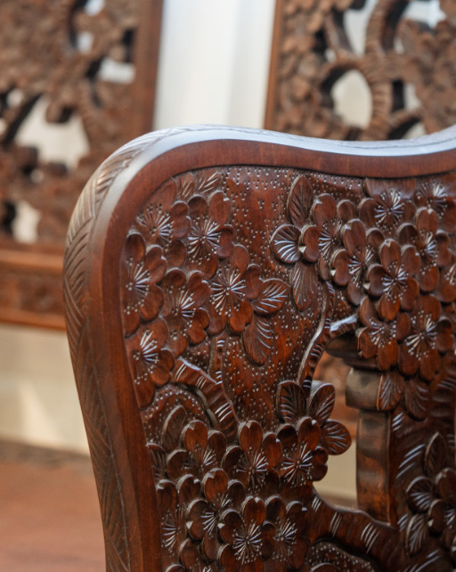
-
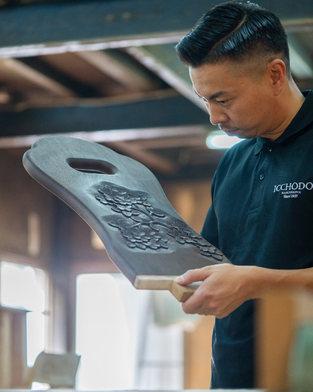
伝統と情熱が原動力
「一彫堂」を支える力
長年にわたり伝統工芸を守り続けてきました。その原動力となっているのは、職人たちの仕事に対する誇りと情熱です。何十年も前に購入された家具が再び修理のために持ち込まれることや、お客様が長く使い続けていると話してくれることが、職人にとって大きな喜びとやりがいとなります。こうした瞬間に、自分たちが長く続けてきたことの意義を強く感じます。
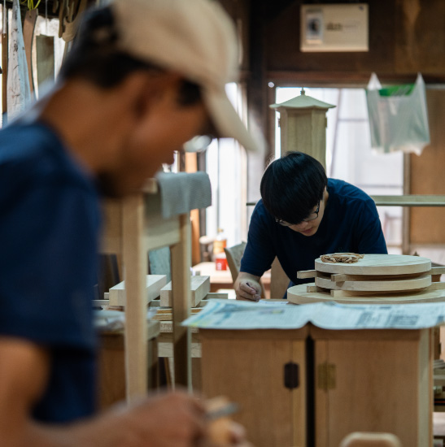
一彫堂の家具は、オーダーメイドで一つひとつ丁寧に作られており、製作には半年から1年ほどの時間がかかることもあります。お客様が長い間待ち続けてくださることに応えるため、職人たちは常に最高の品質を追求しています。流れ作業ではなく、各注文に込められたお客様の思いをしっかりと受け止め、それに応えるものづくりを心がけています。
また、伝統工芸を次世代に引き継ぐ責任を感じながら、一彫堂は日々努力を続けています。お客様からの感謝の言葉や、家具を通じて喜びを感じていただけることが、職人たちの大きな励みとなり、伝統を守る力となっています。軽井沢彫の美しさとその伝統を、多くの人々に知ってもらいたいという思いが、一彫堂を支える力となっているのです。
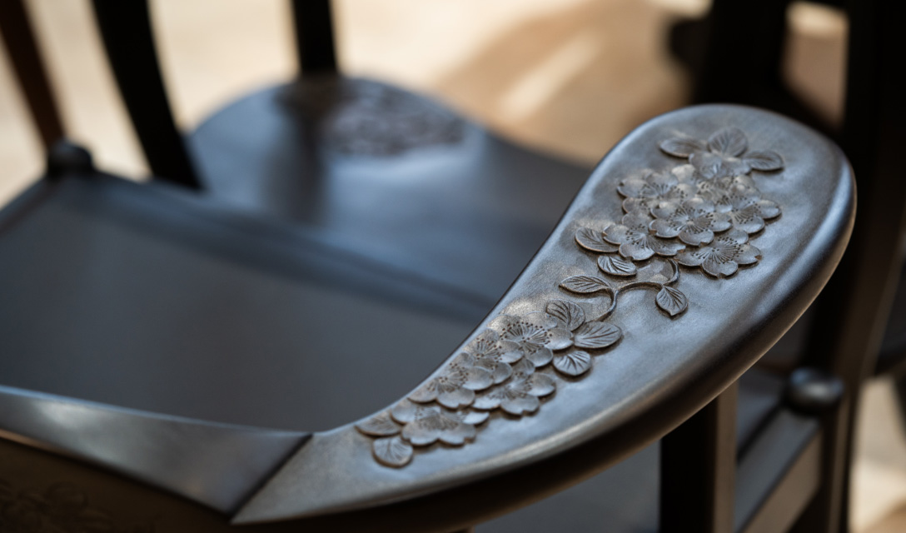
未来への挑戦と伝統の継承
「一彫堂」が描くビジョン
-
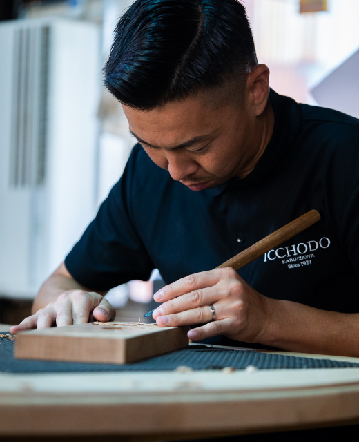
-
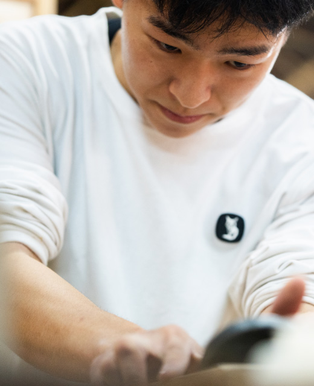
軽井沢彫の美しさとその伝統を後世に伝えることを使命とし、長年にわたりその技術を守り続けてきました。これからも伝統を大切にしつつ、新しい挑戦を続けることを目指しています。
近年では、フランスでの展示会を通じて海外の方々にも軽井沢彫の魅力を伝えるなど、国際的な展開にも積極的に取り組んでいます。外国の文化に影響を受けて発展した軽井沢彫は、海外のお客様にも高い関心を持たれており、その美しさを広く知ってもらうための活動が進められています。
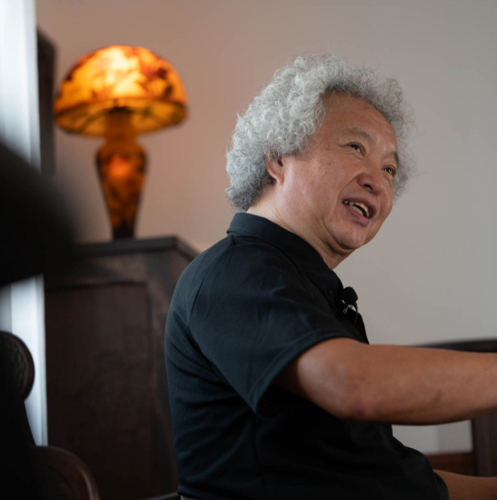
また、一彫堂は若手職人の育成にも力を注いでいます。職人が一人前になるまでには5年から10年の歳月がかかるため、技術の継承が欠かせません。若い職人たちが全国から集まり、その技を磨き続けています。軽井沢彫が未来に渡って継承されるよう、地域と連携しながら若手の成長を支援しています。
一彫堂は、国内外のお客様に軽井沢彫の魅力を伝えるため、展示会やイベントの企画を進めるとともに、若手職人の育成を通じて伝統の継承を図っています。これからも、軽井沢彫を未来に向けて広げる様々な活動に積極的に取り組んでいきます。
一彫堂が目指す未来
「伝統を守り、新たな挑戦へ」
-
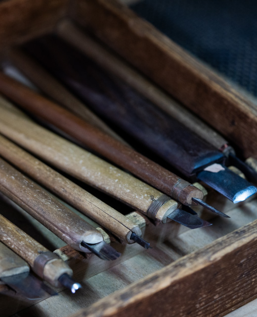
-
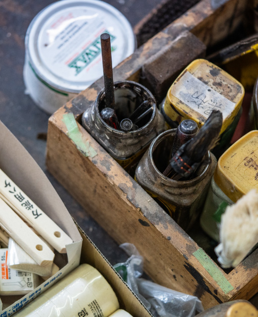
私たちが作っている日本の伝統工芸品を、エスコンのように大切に思っていただけることは、とても嬉しいです。現代では、どうしても海外の製品に目が向きがちですが、日本の伝統的なものにも目を向けてくださる方がいることは、本当にありがたいことです。特に、エスコンの「ライフデベロッパー」という理念に基づき、私たちのような伝統工芸を支えてくださることに感謝しています。伝統工芸を続けていくためには、消費して支えてくださる方がいないと成り立ちません。そういった意味で、私たちの作品を応援していただけることは、大変嬉しく感じています。
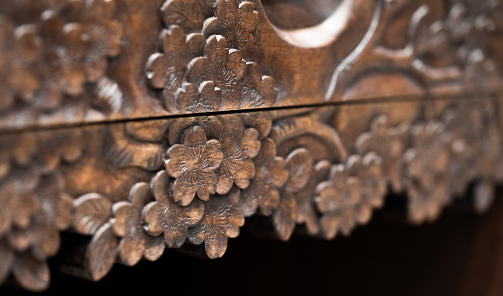
日本各地には、さまざまな伝統工芸品があります。昔の日本の技術や職人技は本当に素晴らしいもので、それを今後もなくさずに続けていくことが重要だと思います。特に、軽井沢彫を知らない若い世代の方々にも、この伝統を知っていただき、良いものを次の世代へと伝えていけるような取り組みを、エスコンのライフデベロッパーとしての想いに基づいて進めていければ、素晴らしいと思います。
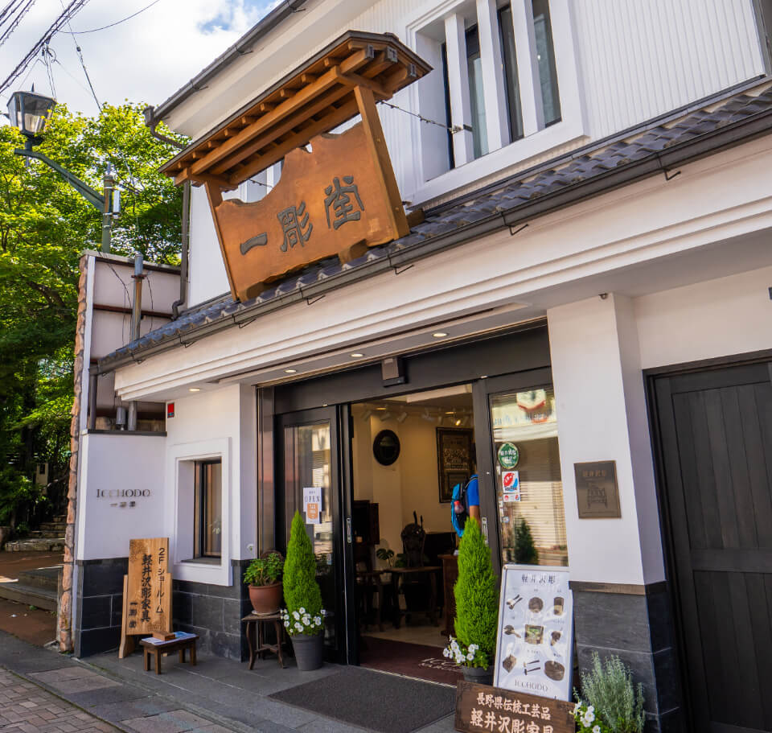

New Release in Karuizawa Area

エスコン
軽井沢エリアにおける新規取得事業用地
（仮称）軽井沢長倉プロジェクト
会員様には、最新情報や
特別な商談機会をいち早くお届けします。
※掲載のクラフトマンの写真・映像、記事は、2024年8月に取材撮影したものです。 ※掲載の地図は略図のため、省略されて表現されています。